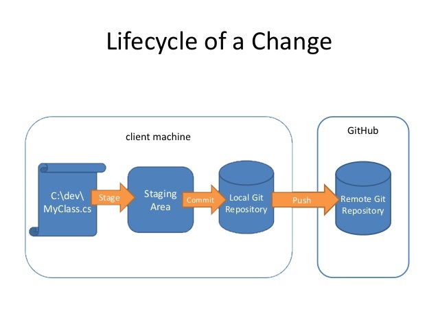

What is Git
Git is by far, the most widely used modern version control system in the world today is Git. Git is a mature, actively maintained open source project originally developed in 2005 by Linus Torvalds, the famous creator of the Linux operating system kernel. A staggering number of software projects rely on Git for version control, including commercial projects as well as open source. Developers who have worked with Git are well represented in the pool of available software development talent and it works well on a wide range of operating systems and IDEs (Integrated Development Environments). Having a distributed architecture, Git is an example of a DVCS (hence Distributed Version Control System). Rather than have only one single place for the full version history of the software as is common in once-popular version control systems like CVS or Subversion (also known as SVN), in Git, every developer's working copy of the code is also a repository that can contain the full history of all changes.
In addition to being distributed, Git has been designed with performance, security and flexibility in mind.
Git Install
A Windows version of Git can be found on the Git download page .
Create a new Git repository
Every Git repository is stored in the .git folder of the directory in which the Git repository has been created. This directory contains the complete history of the repository. The .git/config file contains the configuration for the repository.
Use the git init command to create a Git repository in the current directory. Git does not care whether you start with an empty directory or if it contains already files.
# initialize the Git repository
# for the current directory
* git init
Cloning a repository
The git clone command copies an existing Git repository. This copy is a working Git repository with the complete history of the cloned repository. It can be used completely isolated from the original repository.
# clone online repository
$ git clone http://github.com/vogella/gitbook.git
